Candidate List 20261001Last night — ZTF: 2,446 passed basic cuts (63 young) · LSST: 0 passed basic cuts (0 young)Previous Day Next Day
Section 1: New Sources (age<1d) Section 2: Old (1-5d) sources observed last nightplaceholder
Section 1: New Afterglow/FBOT Cands Last Night (0)
Section 2: Older Sources Observed Last Night (7)
0. [ZTF] ZTF26abxjlva (FBOT?) [Back to Top] [Share] [Trigger Swift] [Fritz Alert] [Fritz Source] [Lasair]RA, Dec: 125.36769, 3.77606 8h21m28.24s, 3d46m33.83sGalactic (l, b): 220.07772, 21.7151 ext(g-r) = 0.027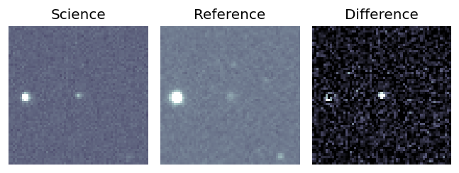
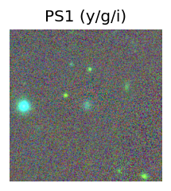
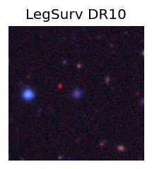
TESS: Sectors [ 7 61 88 112]
SDSS (<15 kpc):Found SDSS phot-z: z=0.07; peak abs mag = -19.64
PS1: 0 sources in 3 arcsec
LegacySurvey: 1 sources in 3 arcsec Closest: d = 0.58 arcsec, 216.6 deg (east of north) photoz=0.16 (68% bounds 0.09, 0.21), type=REX peak abs mag (ext. corrected) = -21.47 (68% bounds -20.04, -22.19)
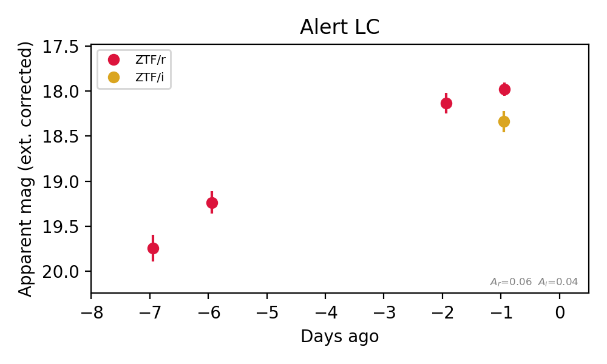
Extinction-corrected ri color:
From alerts: -0.36 +/- 0.14 mag
Rise Rate:
r: 0.28 mag/day
Fade Rate:
1. [ZTF] ZTF26abxkuhv (Afterglow?) [Back to Top] [Share] [Trigger Swift] [Fritz Alert] [Fritz Source] [Lasair]RA, Dec: 315.62611, -19.46162 21h 2m30.27s, -19d-27m-41.85sGalactic (l, b): 28.32868, -37.30659 WARNING: -2.49 deg from ecliptic plane ext(g-r) = 0.056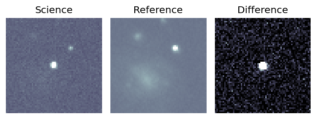
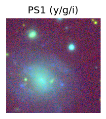
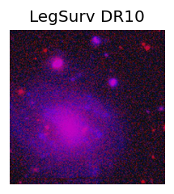
TESS: Sectors [ 92 116]
PS1: 0 sources in 3 arcsec
LegacySurvey: 0 sources in 3 arcsec
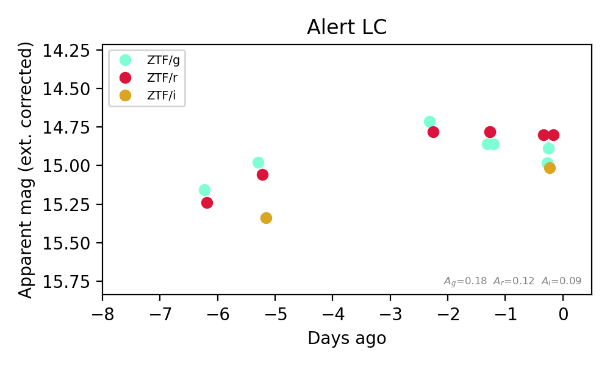
Extinction-corrected gr color:
From alerts: 0.15 +/- 0.03 mag
Extinction-corrected gi color:
From alerts: -0.06 +/- 0.03 mag
Extinction-corrected ri color:
From alerts: -0.21 +/- 0.03 mag
Consistent with synchrotron, g-r>0!
Rise Rate:
g: 0.03 mag/day
r: 0.07 mag/day
i: 0.64 mag/day
Fade Rate:
2. [ZTF] ZTF26abxpksn (Afterglow?) [Back to Top] [Share] [Trigger Swift] [Fritz Alert] [Fritz Source] [Lasair]RA, Dec: 280.15605, 7.98837 18h40m37.45s, 7d59m18.14sGalactic (l, b): 38.8412, 6.02366 ext(g-r) = 0.556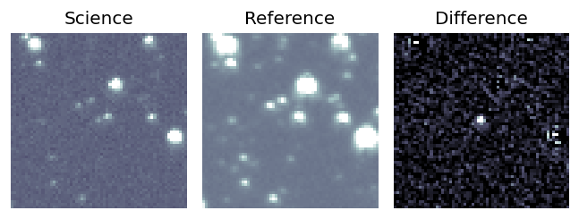
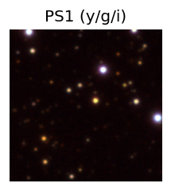

TESS: Sectors [ 80 118]
PS1: 0 sources in 3 arcsec
LegacySurvey: 0 sources in 3 arcsec
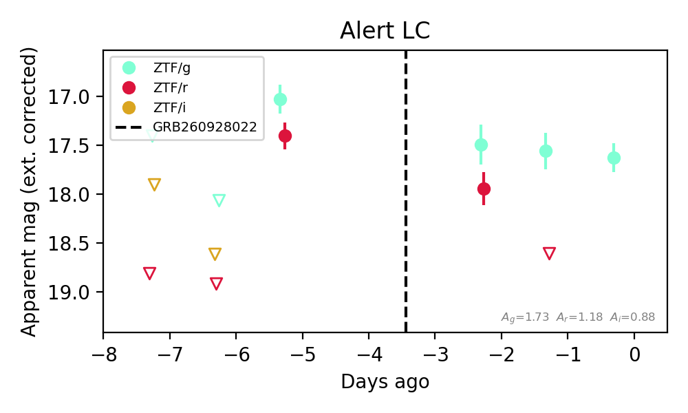
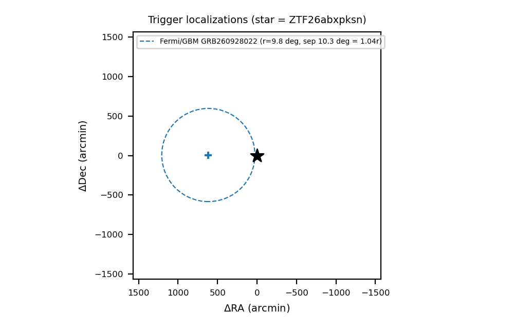
Extinction-corrected gr color:
From alerts: -1.04 +/- 99 mag
Rise Rate:
g: 1.11 mag/day
r: 1.46 mag/day
Fade Rate:
g: 0.12 mag/day
r: 0.67 mag/day
3. [ZTF] ZTF26abycuyt (FBOT?) [Back to Top] [Share] [Trigger Swift] [Fritz Alert] [Fritz Source] [Lasair]RA, Dec: 319.86995, 37.74948 21h19m28.79s, 37d44m58.12sGalactic (l, b): 83.28297, -8.30529 ext(g-r) = 0.183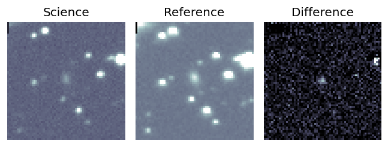
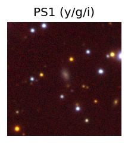

TESS: Sectors [ 15 55 56 75 76 82 83 121]
PS1: 1 source in 3 arcsec Closest: d = 1.86 arcsec photoz=0.16+/-0.02 peak abs mag = -19.96
LegacySurvey: 0 sources in 3 arcsec
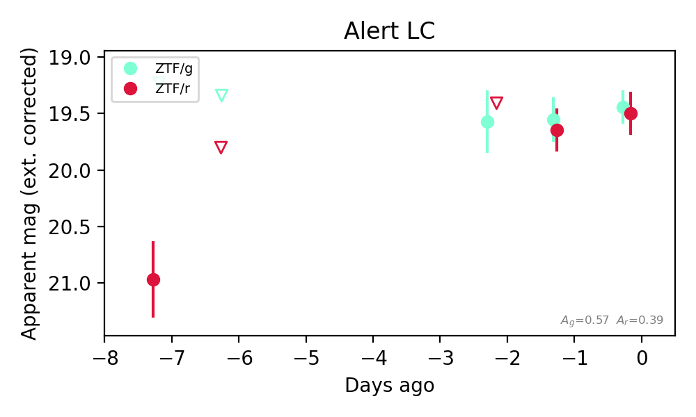
Extinction-corrected gr color:
From alerts: -0.06 +/- 0.24 mag
Consistent with synchrotron, g-r>0!
Rise Rate:
g: 0.07 mag/day
r: 0.21 mag/day
Fade Rate:
4. [ZTF] ZTF26abyalli (Afterglow?) [Back to Top] [Share] [Trigger Swift] [Fritz Alert] [Fritz Source] [Lasair]RA, Dec: 117.24982, -9.45729 7h48m59.96s, -9d-27m-26.24sGalactic (l, b): 228.04405, 8.23628 ext(g-r) = 0.142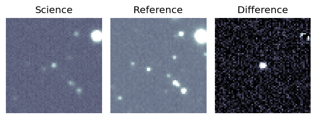
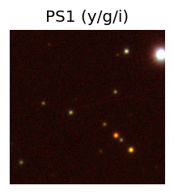

TESS: Sectors [ 7 7 34 61 88 111]
PS1: 1 source in 3 arcsec Closest: d = 0.09 arcsec photoz=0.24+/-0.42 peak abs mag = -23.39
LegacySurvey: 0 sources in 3 arcsec
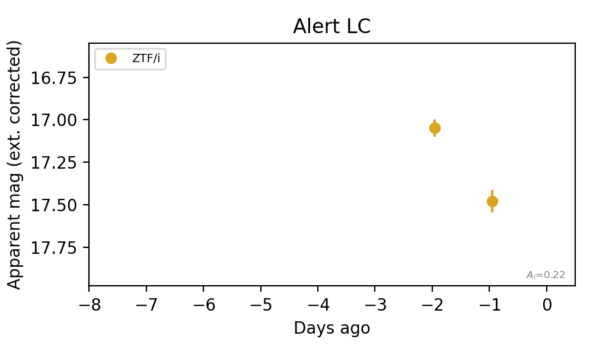
Rise Rate:
Fade Rate:
i: 0.43 mag/day
5. [ZTF] ZTF26abydudp (FBOT?) [Back to Top] [Share] [Trigger Swift] [Fritz Alert] [Fritz Source] [Lasair]RA, Dec: 359.61902, 13.51659 23h58m28.56s, 13d30m59.73sGalactic (l, b): 103.73447, -47.37137 ext(g-r) = 0.057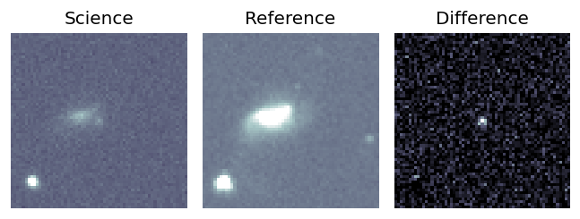
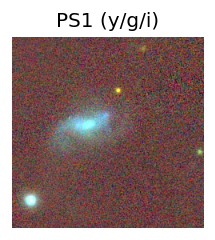
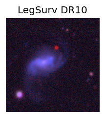
TESS: Sectors [42 83]
SDSS (<15 kpc):Found SDSS phot-z: z=0.55; peak abs mag = -23.49
NED host (10 arcsec):Found WISEA J235829.02+133101.5 (G, 7.0″); NED spec-z: z=0.0281 [zflag SUN]; peak abs mag = -16.45
PS1: 0 sources in 3 arcsec
LegacySurvey: 1 sources in 3 arcsec Closest: d = 3.96 arcsec, 137.4 deg (east of north) photoz=0.22 (68% bounds 0.04, 0.67), type=EXP peak abs mag (ext. corrected) = -21.22 (68% bounds -17.26, -24.03)
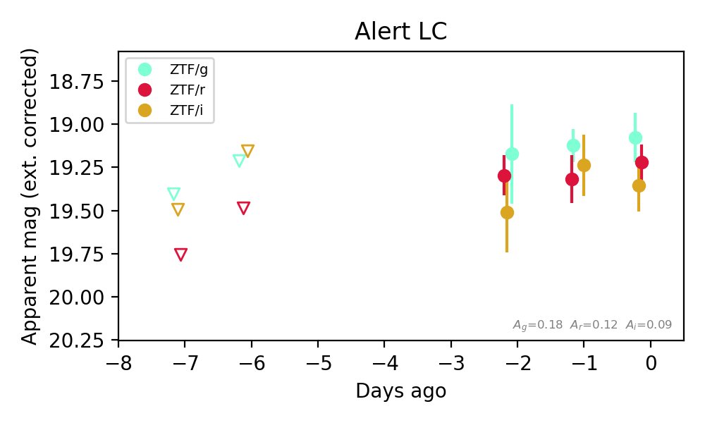
Extinction-corrected gr color:
From alerts: -0.14 +/- 0.18 mag
Extinction-corrected gi color:
From alerts: -0.28 +/- 0.2 mag
Extinction-corrected ri color:
From alerts: -0.14 +/- 0.18 mag
Consistent with synchrotron, g-r>0!
Rise Rate:
g: 0.21 mag/day
r: 0.14 mag/day
i: 0.09 mag/day
Fade Rate:
6. [ZTF] ZTF26abyistt (Afterglow?) [Back to Top] [Share] [Trigger Swift] [Fritz Alert] [Fritz Source] [Lasair]RA, Dec: 294.21604, 8.18264 19h36m51.85s, 8d10m57.51sGalactic (l, b): 45.45474, -6.23273 ext(g-r) = 0.357Coincident trigger: Fermi/GBM GRB260928022 (r=9.8 deg, sep 3.6 deg = 0.37 r; 1.10 d before first detection)Trigger time(s) marked on the light curve; error circles in the localization panel.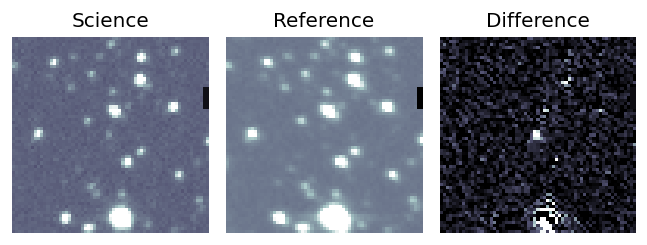
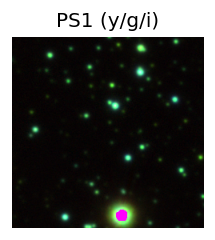

TESS: Sectors [54 81]
PS1: 1 source in 3 arcsec Closest: d = 2.36 arcsec photoz=0.63+/-0.05 peak abs mag = -24.58
LegacySurvey: 0 sources in 3 arcsec
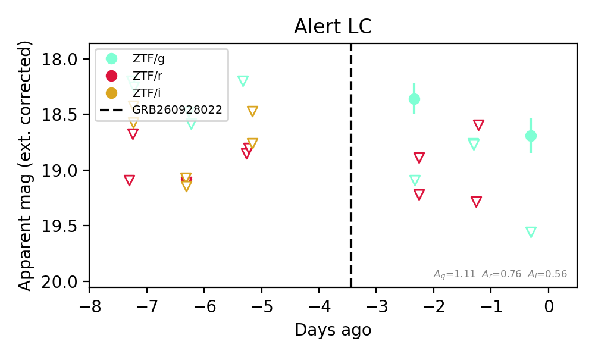
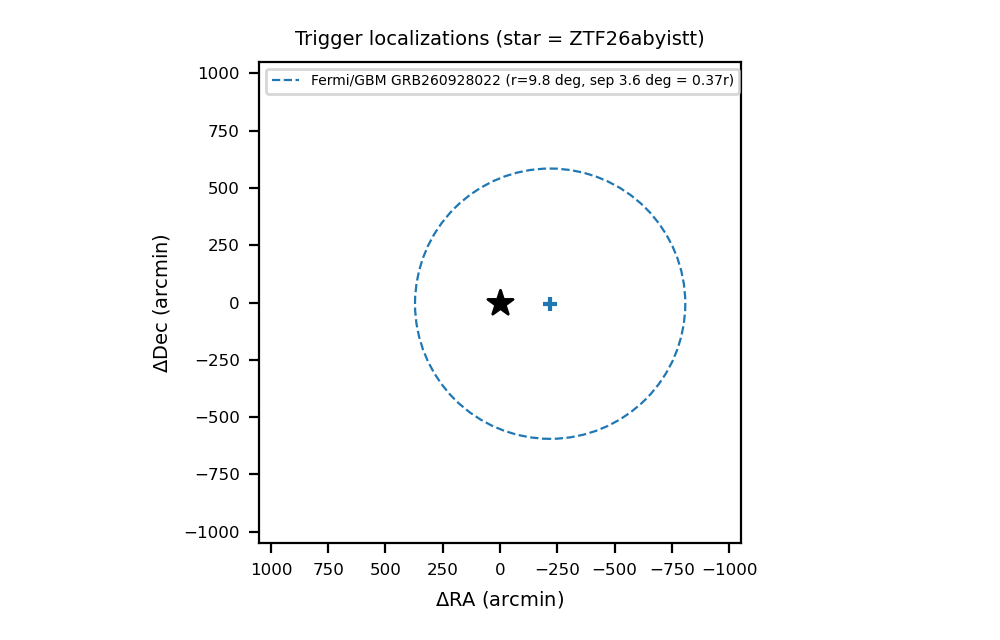
Extinction-corrected gr color:
From alerts: -0.86 +/- 99 mag
Rise Rate:
g: 0.2 mag/day
Fade Rate:
g: 0.59 mag/day